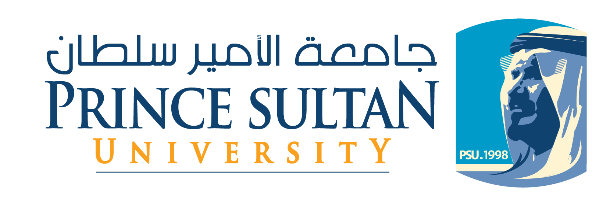

Deanship of Educational Services (DES)

Preparatory Year Program (PYP)
The PYP program needs a serious revision to cope up with different changes and trends. Different PYP programs were surveyed to act as a benchmark for our proposed changes.
King Fahd University of Petroleum and Minerals (KFUPM)
Najran University
Fahad Bin Sultan University
Home
/
Go Back